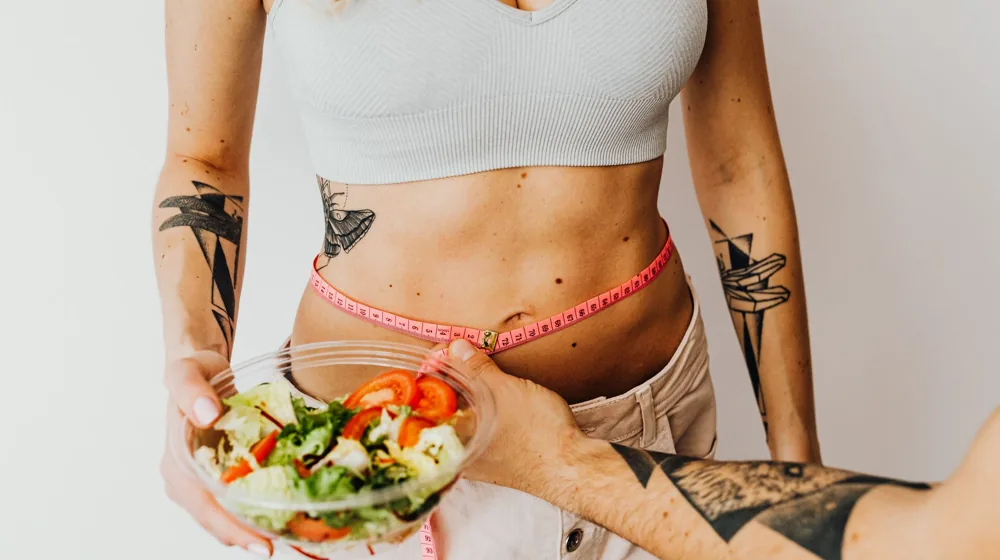

간헐적 단식, 매일 8시간만 먹으면 될까? 초보자를 위한 핵심 방법과 주의점
사진: Leeloo The First / Pexels (무료 이미지, 출처 표기)
간헐적 단식, 정확히 무엇이고 왜 효과적일까요?

간헐적 단식은 단순히 먹는 양을 줄이는 것을 넘어, '먹는 시간'과 '단식 시간'을 규칙적으로 나누는 식사법입니다. 짧은 단식 기간 동안 인슐린 수치를 낮게 유지하여 몸이 지방을 에너지원으로 사용하도록 유도하는 것이 핵심 원리입니다. 이를 통해 체중 감량뿐만 아니라 혈당 조절, 염증 감소 등 다양한 건강상의 이점을 기대할 수 있어 많은 이들의 주목을 받고 있습니다.
단식 시간이 길어지면 인슐린 수치가 낮아지고, 이는 체내에 저장된 글리코겐(탄수화물 저장 형태)을 소진한 후 지방 연소를 촉진합니다. 일부 연구에서는 간헐적 단식이 세포 재생을 돕는 자가포식(Autophagy) 과정을 활성화한다고도 보고되고 있습니다. 2026년 8월 기준, 이러한 연구 결과들이 계속 발표되며 건강 관리의 한 방법으로 자리 잡고 있습니다.
나에게 맞는 간헐적 단식 유형 고르기 (대표 방법 비교)
간헐적 단식에는 다양한 방법이 있으며, 각자의 생활 패턴과 목표에 맞춰 선택하는 것이 중요합니다. 가장 널리 알려진 세 가지 유형을 비교하여 자신에게 맞는 방법을 찾아보세요.
어떤 방법을 선택하든 중요한 것은 꾸준함입니다. 처음부터 무리하기보다는 16:8 단식처럼 비교적 쉬운 방법으로 시작하여 몸이 적응하는 시간을 주는 것이 좋습니다. 단식의 강도를 점차 높여가는 것을 고려해볼 수 있습니다.
단식 시간 중 무엇을 마시고, 식사 시간에는 어떻게 먹을까? (식단 가이드)
간헐적 단식의 성공 여부는 단식 시간과 식사 시간 동안 무엇을 섭취하느냐에 달려 있습니다. 단순히 굶는 것을 넘어, 현명한 식단 구성이 필요합니다.
단식 시간 중 섭취 가능한 음료
- 물: 가장 중요합니다. 충분한 수분 섭취는 배고픔을 줄이고 신체 기능을 원활하게 합니다.
- 블랙커피 또는 차(무가당): 소량의 카페인은 단식 중 활력을 주고 식욕 억제에 도움을 줄 수 있습니다. 설탕, 크림, 우유 등 칼로리가 있는 첨가물은 피해야 합니다.
- 탄산수: 물에 레몬 조각을 추가하여 풍미를 더하는 것도 좋습니다.
단식 중에는 인슐린 반응을 일으키지 않는 음료만 섭취해야 합니다. 칼로리가 있는 모든 음료는 단식을 방해할 수 있습니다.
식사 시간 중 건강하게 먹는 법
단식 시간이 끝났다고 해서 아무 음식이나 과식하는 것은 피해야 합니다. 식사 시간에는 몸에 좋은 영양소를 충분히 공급하는 것이 중요합니다.
- 단백질 위주 식사: 닭가슴살, 생선, 콩류 등 양질의 단백질은 포만감을 주고 근육 손실을 방지하는 데 도움을 줍니다.
- 건강한 지방 섭취: 아보카도, 견과류, 올리브 오일 등은 에너지원으로 활용되며 포만감을 오래 유지시킵니다.
- 다양한 채소와 과일: 비타민, 미네랄, 식이섬유가 풍부하여 장 건강과 신체 기능 유지에 필수적입니다.
- 통곡물 선택: 백미보다는 현미, 통밀빵 등 정제되지 않은 탄수화물을 선택하여 혈당 스파이크를 줄입니다.
식사 시간에도 균형 잡힌 영양 섭취를 통해 건강을 유지하고 단식의 효과를 극대화해야 합니다. 한 번에 너무 많은 양을 먹기보다는 적절히 나누어 섭취하는 것이 좋습니다.
간헐적 단식 시작 전, 꼭 알아야 할 주의사항
간헐적 단식은 많은 이점을 제공하지만, 모든 사람에게 적합한 것은 아니며 몇 가지 주의할 점이 있습니다.
초기 부작용과 대처법
단식 초기에는 두통, 현기증, 무기력감, 집중력 저하, 위장 불편감 등을 경험할 수 있습니다. 이는 몸이 새로운 식사 패턴에 적응하는 과정에서 나타나는 자연스러운 현상입니다. 충분한 수분 섭취, 전해질 보충(소량의 소금 섭취 등), 그리고 가벼운 활동으로 이러한 증상을 완화할 수 있습니다. 증상이 심하거나 오래 지속된다면 단식 강도를 조절하거나 잠시 중단하는 것이 필요합니다.
피해야 할 대상 또는 전문가와 상담이 필요한 경우
특정 질환이나 상황에 있는 경우 간헐적 단식은 건강에 해로울 수 있으므로 반드시 피하거나 전문의와 상담해야 합니다.
- 임산부 및 모유 수유 여성
- 성장기 어린이 및 청소년
- 제1형 당뇨병 환자 또는 인슐린 주사를 맞는 제2형 당뇨병 환자
- 저혈당 위험이 있는 사람
- 섭식 장애(거식증, 폭식증 등) 병력이 있는 사람
- 특정 약물을 복용 중인 사람 (특히 혈압약, 당뇨약 등)
- 저체중이거나 영양 결핍 상태인 사람
서울대학교병원 건강칼럼에 따르면, 만성질환자는 반드시 의사와 상의 후 간헐적 단식을 시작해야 합니다. 2026년 8월 기준, 개인의 건강 상태는 다양하므로 무리한 도전은 삼가는 것이 좋습니다.
성공적인 간헐적 단식을 위한 실천 팁
간헐적 단식을 성공적으로 이어가기 위해서는 몇 가지 실천적인 팁을 활용하는 것이 좋습니다.
- 점진적으로 시작하기: 처음부터 긴 단식 시간을 고수하기보다는, 식사 시간을 1~2시간씩 점진적으로 줄여나가며 몸이 적응하도록 돕습니다.
- 충분한 수분 섭취: 단식 중에도 갈증을 느끼기 전에 물을 자주 마셔 탈수를 예방하고 배고픔을 줄입니다.
- 단백질과 식이섬유 풍부한 식사: 식사 시간에는 포만감을 오래 유지시켜 다음 단식 시간을 버티게 해줄 단백질과 식이섬유가 풍부한 음식을 우선적으로 섭취합니다.
- 규칙적인 수면: 수면 부족은 식욕을 높이는 호르몬 분비에 영향을 미치므로, 충분하고 규칙적인 수면 시간을 확보하는 것이 중요합니다.
- 가벼운 운동 병행: 단식 중에도 가벼운 걷기나 스트레칭은 신진대사를 촉진하고 기분 전환에 도움을 줄 수 있습니다. 고강도 운동은 식사 시간에 맞춰 진행하는 것이 좋습니다.
- 자신에게 관대해지기: 단식을 어기는 날이 있더라도 자책하기보다는 다음 날 다시 시작하는 유연한 마음가짐이 중요합니다. 완벽보다는 꾸준함을 목표로 합니다.
간헐적 단식은 단기적인 체중 감량법이라기보다, 장기적인 건강 관리를 위한 생활 습관입니다. 따라서 자신에게 맞는 방법을 찾아 꾸준히 실천하는 것이 가장 중요합니다. 모든 의학적 조언과 마찬가지로, 시작 전에는 반드시 의료 전문가와 상담하여 자신의 건강 상태에 적합한지 확인하시길 권장합니다.
🔗 이 글도 함께 보면 좋아요: 필라테스 vs 요가, 나에게 딱 맞는 운동은? 5가지 핵심 차이 비교